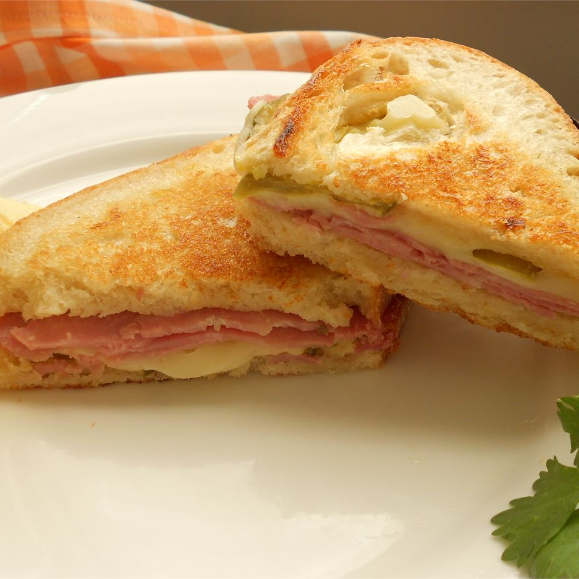

Ham Sandwich

A nice ham sandwich
This sandwich is called a 'Media Noche' which translates to 'Midnight.' It makes a wonderful dinner sandwich
because it is served hot. A nice side dish is black bean soup or black beans and rice, and plantain chips.
ingredients
- 1 cup mayonnaise
- 5 tablespoons Italian dressing
- 4 hoagie rolls, split lengthwise
- 4 tablespoons prepared mustard
- ½ pound thinly sliced deli turkey meat
- ½ pound thinly sliced cooked ham
- ½ pound thinly sliced Swiss cheese
- 1 cup dill pickle slices
- ½ cup olive oil
Steps
- In a small bowl, mix together mayonnaise and Italian dressing. Spread mixture on hoagie rolls. Spread each
roll with mustard. On each roll, arrange layers of turkey, ham, and cheese. Top each with dill pickle
slices. Close sandwiches, and brush tops and bottoms with olive oil.
- Heat a non-stick skillet over medium high heat. Place sandwiches in skillet. Cook sandwiches for 2 minutes,
pressing down with a plate covered with aluminum foil. Flip, and cook for 2 more minutes, or until cheese is
melted. Remove from heat, place on plates, and cut in half diagonally.
Home